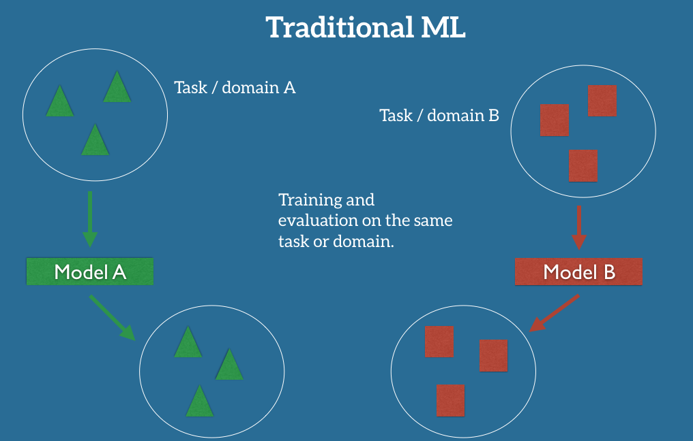
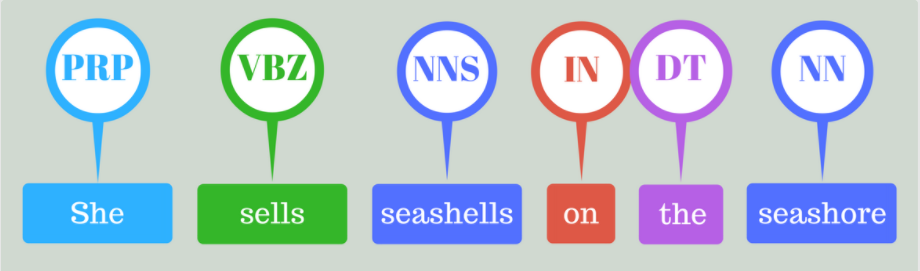
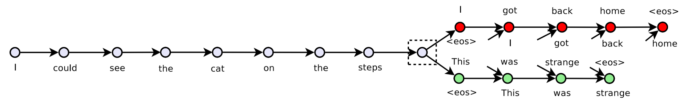
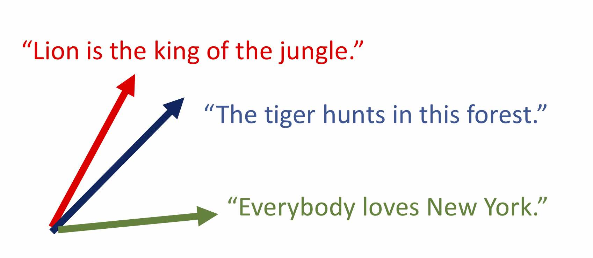
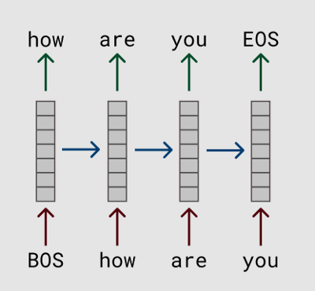
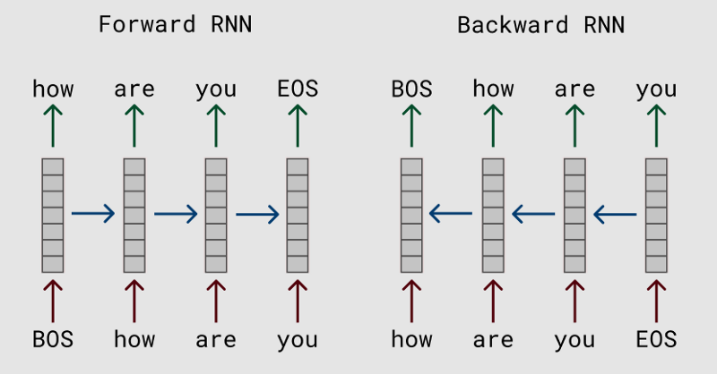

Transfer Learning for NLP
Enrique Manjavacas
1 Motivation
Exploit information acquired during learning one task to help learning another related task
- Humans never approach new tasks in isolation
- Traditional Machine Learning, however, treats new tasks in isolation

- [source: http://ruder.io/]

- [source: http://ruder.io/]
Related Concepts
Transfer Learning (TL) vs Unsupervised Pretraining (UP)
- Unsupervised Pretraining is a very specific concept or technique from the Deep Learning literature
- Neural Networks training can be unstable and parameter pretraining can be crucial to achieve good performance
- Transfer Learning is a broad field inside Machine Learning (and is not restricted to Deep Learning)
Transfer Learning vs Multi-task Learning (MTL)
- MTL focuses on using (multiple) auxiliary related tasks to improve learning on all tasks
- TL seeks to improve learning in one task using other (possibly ad-hoc) tasks
Transfer Learning (TL) vs Domain Adaptation (DA)
- In DA there is only one task—same as in TL
- However, in DA target data comes from a different domain than during training
Current Deep Learning (DL) algorithms are “data hungry”
- DL algorithms have shown dramatic improvements across fields in Machine Learning
- DL requires large amounts of training material to tackle (increasingly) complex tasks

- \(P(NNS|VBZ, f(seashells); \theta)\)
- What is \(f\)?
- ML: \(\{lemma(x_i), ending(x_i), upper(x_i), ...\}\)
- DL: \(g(seashells; \theta)\)
- Embedding matrix
- RNN
- CNN
- \(g\) must be trained on large datasets for the features to be useful
- But labeled datasets for training are usually of small scale
ImageNet: Classical example of Deep Transfer Learning
- More than 1M images labeled for 1000 image classes
- Benchmark for image classification
- Very deep models trained for long times (weeks)
- Lower layers shown to extract features useful for many other Computer Vision tasks

2 Transfer Learning in NLP
- Word Embeddings
- Sentence Embeddings
- Transfer Learning via Language Modeling
Word Embeddings
- Word vector spaces trained (implicitely or explicitely) to encode semantic relationships between words
- For example, Glove vectors are trained such that vector products encode word co-occurrence statistics
Word Embeddings as Transfer Learning
- Lexical semantics is arguably one of the first steps in language understanding
- Leverage large amounts of unlabelled data (corpora in the size of several billion words)
- Specifically useful for parameter initialization of Neural Networks
Impact
- Too many applications and papers to summarize but…
- It’s reported that word-embedding initialization gets you a boost of 2 to 3 percentage points across the board
Sentence Encoders
- Extension of word embeddings to the sentential level
- Sentences are encoded into a vector space in which semantically related sentences are close
Skipthoughts Model 
Skipthoughts Model 
Sentence Embeddings as Transfer Learning
- Leverage large corpora (typically Book Corpus: ~1B words)
- Extract features for downstream sentence classifiers
Impact
- State of the art for many sentence-level tasks
- Semantic Textual Similarity (correlation with human judgements)
- Paraphrase Detection (binary classification)
- Natural Language Inference (Entailment, Contradiction, etc.)
- Sentiment Analysis
Limitations
Limitations of Word Embeddings
Language understanding requires more than just lexical semantics
- compositionality
- polysemy (word-sense disambiguation)
- anaphora (corefence resolution)
- agreement
- negation
- … and basically any type of long-term dependency
Limitations of Sentence Embeddings
- Black-box sentence embeddings
- Unclear how word-level information is composed into final sentence embedding
- Limited used for word and sub-sentential level tasks (PoS, NER, Parsing, etc…)
3 Transfer Learning with Language Models (LM)
Definition
Language Model
\(P(The, cat, sat, on, the, mat, .)\) =
\(P(The | \text{<}bos\text{>})\)
* \(P(cat | \text{<}bos\text{>} , The)\)
* \(\ldots\)
* \(P(. | \text{<}bos\text{>} , \ldots , mat)\)

- Recurrent Network
- \(P(w_t|w_1, ..., w_{t-1}) \propto W \cdot h_t = W \cdot RNN(w_t, h_{t-1})\)
Current interest on linguistic information modelled by LMs
Inspection of LMs through auxiliary tasks shows that LMs internally model linguistic structure
- Long-distance dependencies
- Subject-verb agreement
- Negation and contrastive compositionality: “The service was poor, but the food was …”
- Higher probabilities are assigned to valid long-distance dependencies
- Higher layers seem to encode more abstract syntactic information
- POS-relevant information encoded at lower layers than dependency-relevant information
- Seems to do so better than Machine Translation Models
Potential of LMs for Transfer Learning
Bidirectional Language Model

In-domain fine-tuning of word-embeddings
- Train a multiple-layer Bidirectional LM
- Learn a task-specific projection of features learnt at different layers
- Forward layer: \(h_t^{fwd} = RNN(w_t, h_{t-1})\)
- Backward layer: \(h_t^{bwd} = RNN(w_t, h_{t+1})\)
- Bidirectional: \(h_t = [h_t^{fwd}; h_t^{bwd}]\)
- ELMO Embedding: \(v_t^{task} = \sum_{j=0}^{N} s_j^{task} h_t^j\)
Impact